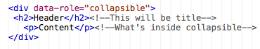
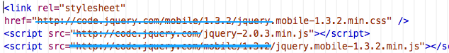

Welcome to the YEI pocket Reference. Use this to quickly brush up on some of the key concepts here at camp. Don't forget to ask other human beings for help!
HTML - Hyper Text Markup Language. A way of "marking up" text in a source file so that it will look differently when opened as a webpage.
Webpages are written in HTML. All the words and images you see are HTML Elements. You can write your own HTML files in a text editor like Notepad++. Just save it with the file extension ".html".
Content - The words and images that you see in the webpage. When you see "Hello World" on the webpage, that's content. When you see a picture of a cat, that's content.
Element - Like in chemistry how everything is made up of chemical elements, in web design everything is made out of HTML elements.
Think of an element as a complete HTML molecule. It is a full combination of an opening tag, the content, and a the corresponding closing tag.
Attribute - Something put into the opening tag of an element to specify information about that element. The "href" attribute is used in the opening of an <a> tag to specify the destination of a link. The syntax goes: name="value"
Ex.<a href="http://giip.org">Link Text</a> see how the attribute is put into the open tag and follows the name="value" format.
Ex. <a data-role="button">Link Text</a> will turn a normal text link into a button (jQuery Mobile only)
id - An attribute used to give an identity, or ID, if you will, to an element. Id's are crucial to a lot of things that we do with jQuery Mobile and have to do with link destinations. Imagine that all life is a webpage. All people are the HTML element <person>. The id attribute allows us to differentiate between <person>'s.
<person id="Thomas">I like turtles</person>
In computering, we use some different terms for things you might already know of. One of the biggest is that we call "Folders" "Directories". Whenever we say, "Go to your root directory", we mean, "Go to the folder where you put your app".
Root Directory is the term we use to refer to the top most folder. The one that contains your "index.html"
File Paths are the directions that you tell to the computer to let them know where things are.
There is an absolute path, which starts with your computer's home directory. I'm writing this app on my computer. Here's the absolute file path:
Users/laptop/Desktop/Dropbox/YEI/Working/pocket-ref/index.html
<p> - Paragraph. Whenever you want to represent normal text, you use <p>
<p>This sure is a swell paragraph</p>
<h1>-<h6> - Heading. Range from size 1 (<h1>) to size 6 (<h6>). You use these for layout. Often you will create a page that has distinct secitions. Headings are often short and too the point, followed by paragraphs.
<ul> - Unordered List. You may know this by the name "bullet list".This tag declares that there's going to be an unordered list happening, but it won't produce anything on it's own. To make actual list items, you need...
<li> - List Item. These create actual things to show up in the list. Each time you want a new list item, you just skip a line and add another <li>content</li> element.
<ul>
<li>List Item 1</li>
<li>List Item 2</li>
<li>List Item 3</li>
</ul>
<img> - Image. You can guess what this does. The <img> tag is a little different from others in that it doesn't require a closing tag. The attribute "src" defines the image source.
<img src="URL or File Path" />
<a> - Anchor. It might help to think of it standing for "A link". <a> is an inline element. You wrap words or an image in the <a> and </a> to make them into links. <a> will do nothing without the "href" attribute.
<p>I want to make the word <a href=http://google.com>Google</a> a link.</p>
Did you know you can link to a point within your webpage? As long as an element has an id, you can use it as a destination. Use '#' and the id name as the destination in a link.
<div> - Division. This is a little tricky but absolutely essential. <div>s have no physical properites of their own. No height, no width, no color, and they do nothing to content placed within them. <div> s allow us to place parts of a webpage into containers so that we can define properties about those containers.
Consider this block of code. It Has a header <div> above a content <div>, and they are both inside the page <div>.
<div> <--The page <div> <div> <--The header <div> <h1>I'm the Header</h1> </div> <div> <--The content <div> <p>I'm the content</p> </div> </div>
And here's what it looks like on the browser (horizontal lines are not part of it)
I'm the content
Don't see anything special? That's because <div>s have no physical properties of their own. I'll add some color to make them visible
<div style="background:purple;"> <div style="background:pink;"> <h1>I'm the Header</h1> </div> <div style="background:blue;"> <p>I'm the content</p> </div> </div>
And here's what it looks like with those style attributes added:
I'm the content
<div>s are often working behind the scense. Just understand that they're part of what makes jQuery Mobile work the way it does.
<!-- -->- Comments. It's considered a best practice to leave comments in your code. They remind you what you're doing, help keep things organized, and help other people who are looking at your code to orient themselves.
Comments only show up in the code, not in the rendered webpage. There is actually a big comment stuck in the middle of this paragraph, but you can't see it unless you look at the source.
Comments are made like this:
<!-- Your Comment Here -->
Cyberduck is a File Transfer Protocol (FTP) Client. A client is a program that runs on your computer and receives and interperates data from another source so that it's useful to the user.
Your browser is a web client that recieves data like HTML, CSS, and JavaScript ad turns it into viewable webpages. It's built specifically to be familiar with web languages and protocols
Outlook is an email client that recieves mail message data and organizes it into a mailbox.
FTP is the method used to transfer files (webpages, stylesheets, images, etc.) back and forth between a local device (your computer) and a remote server (a specially formatted computer somewhere else).
We can make a billion functioning websites right on our laptops, but what's the point if no one else can see them? We need FTP to get them to our server so the world can view our aweomeness.
Cyberduck TutorialYou could have guessed that part.
You'll see a screen asking for a few things:
You should have these credentials written down somewhere. Normally, we would just print them here, but this is a public webpage and we can't have that kind of thing open to everyone.
That's pretty much it. At this point, it functions just like any other folder. It's just that it's a folder on someone else's computer.
Cyberduck allows you to create, edit, and move files while on the server. That means that if you have the webpage open on your phone or laptop, you can make changes, save, and have them show up immediately. No re-uploading required.
This sections is designed to help you out with jQuery Mobile. It contains a lot of quick references and tips.
You may notice that if you try and test your app without an internet connection it won't work. That's becasue jQuery isn't a native function of the web browser. We want our apps to work without an internet connection. Check out this section to understand how that works. Visit Localization Page
Understanding how jQuery Mobile uses attributes to do magic is crucial. This page will show you how to properly use data attributes.Visit Attributes Page
Now that you understand how to use attributes in jQuery Mobile, you should know how to assemble a page. This page will explain the structure of a jQuery Mobile app and how we divide it up to make individual pages. Visit Basics Page
Try and remember these key concepts, and you will do well with this platform.
You'll recall that attributes are pieces of information that go into the opening tag of an HTML element to specify information about that element. When you set the destination of a link
<a href="#home">you are using an attribute to set special information about the <a> element.
jQuery Mobile uses magic to turn 100's of lines of javascript code into a single attribute that we place into our HTML elements. With it we can make drastic changes to our simple HTML elements. Take a simple unordered list:
<ul> <li>This List</li> <li>Is</li> <li>Dull</li> </ul>Which ends up looking like:
We can make it into something that looks like this:
All we had to do was add the attribute
data-role="listview"to the opening <ul> tag.
Likewise, we can turn a simple link
<a href="#jquery-home">Home</a>Into a button with a single attribute,
data-role="button"
Thus, this
Homebecomes
HomeWe can even use an attribute to give it an icon! Using
data-icon="home"we can add a little icon of a house. Home
Understanding that basically everything we do with jQuery Mobile hinges on using attributes to change our simple HTML into something complicated. Once you understand that, you can make any number of amazing widgets.
Read on to the page on Page Structure to understand how we lay out the code of our apps.
In conventional web design, you would have a different HTML page for each webpage you have (index.html, about.html, etc.). We use jQuery Mobile to forget that and have everything on one single HTML document. Everything you've seen on this reference guide is in the exact same file called index.html.
jQuery Mobile uses its magical data attributes to create sections within the document that it will treat as if they were pages. How is that accomplished? We use <div>'s to create "containers" that we can then designate as pages and parts of pages.
A page consists of a series of <div>'s with specific data attributes telling them what they should be. Look at the following code:
<div data-role="page" id="page-id">
<div data-role="header">
<h1>Header Text</h1>
</div>
<div data-role="content">
<p>This is where you write
the page content</p>
</div>
</div>
Take not that there are a total of 3 <div>'s in the above code. You have the <div> for the header, the <div> for the content, and these are both inside the "page" <div>.
Think of a jQuery Mobile page as a cheeseburger. The meat is the content <div>, the toppings are the heading <div> and they're both in between the the buns which you can think of as the page <div>.
A jQuery Mobile app is therefor a big stack of cheeseburgers...or something. Metaphors will only get you so far. The important thing to remember is that a jQuery Mobile app is just a collection of content that are individually contained in a <div> with the data-role of "page".
The official documentation will explain this in more detail so give them a vist Go To Official Site
This section will acquaint you on how jQuery can be run offline
API stands for Application Programming Interface. According to wikipedia:
"An application programming interface specifies how some software components should interact with each other. In practice, most often an API is a library that includes specifications for routines, data structures, object classes, and variables."
Basically what it's saying is that your browser doesn't understand what all this data-role business is about so we need to give it a set of instructions that it does understand so that it can render things properly.
Languages like HTML, CSS, and JavaScript make perfect sense to your browser. It they were designed along side each other and work beautifully in tandem. Developers have found truly wonderous uses using these languages, but they require a lot of code and knowledge of that code.
Look up in the <head> section of any jQuery Mobile app. You'll see links to three files:
http://code.jquery.com/mobile/1.3.2/jquery.mobile-1.3.2.min.js
http://code.jquery.com/jquery-1.9.1.min.js
http://code.jquery.com/mobile/1.3.2/jquery.mobile-1.3.2.min.css
These are the two JavaScript libraries and CSS style sheet that contain all the programming that makes awesome things happen.
Whenever you add data-role="listview" to an unordered list and it makes it all smart phone-y, it's telling the browser to go into the JavaScript library and execute a block of code. Visit one of those links and you'll see how much code we're talking about.
It works really well to have the jQuery libraries hosted on a Content Distribution Network (CDN). So well in fact that it's faster for your browser to get the libraries from them each time a page loads than it is to pull them from your own server.
However, we want our apps to work whether the user has an internent connection or not. To accomplish this, we need to make our own local libraries by writing them ourselves.
Just kidding. That would take a million years. We're just going to copy them from the jQuery Foundation's website
Localization Page 2Finding the libraries you need is very simple, you're already linked to them. It's just a matter of downloading them and changing the reference in apps.
Go to code.jquery.com and find the following files:
Right-click on the file links and hit "Save Link As" and download it to your app directory.
Now all you have to do is go back to the head section and erase the first part of the path for each of these files. The ultimate name of the files will remain the same, but since they're now in your root directory, the path has changed.

We're almost done. We still need to get the images to work offline. On your laptop, go to http://jquerymobile.com/resources/download/jquery.mobile-1.3.2.zip
Open up the folder and drag the "images" folder into your app directory.
We realize that it's kind of difficult to say, "Make some apps." You're learning and there is a ridiculous amount of stuff to be learned. This section aims to help add some structure and, dare we say, fun, to the process.
Below you'll find a collection of challenges relating to various jQuery Mobile concepts and widgets. When you complete one, show a counselor and get your name up on the progress board! First to complete them all gets a prize!
Listviews allow us to change the way boring normal unordered lists are displayed. Click here to see the official documentation for making and using listviews.
Create an unordered list in a webpage or jQuery app.
Make sure it has:
Ideas for content include: List of your favorite websites, schools you're interested it, links to animal pictures
Create an inset listview in a jQuery app. Also give it at least one divider
Using the previous list or a new one, make each list item have a different icon
Full list of icons here.
Make a formatted listview.
You've been invited to a meeting at Filament Group in Boston, MA
Hey Stephen, if you're available at 10am tomorrow, we've got a meeting with the jQuery team.
6:24PM
Boston Conference Planning
In preparation for the upcoming conference in Boston, we need to start gathering a list of sponsors and speakers.
9:18AM
Re: Dinner Tonight
Sure, let's plan on meeting at Highland Kitchen at 8:00 tonight. Can't wait!
4:48PM
Make a listview with 5 items, each with its own custom icon (i.e. not part of the standard jQuery icon set).
Accordions are really nifty widgets. They let your users access lots of iformation information on a single page while keeping it very small. All these challenges are actually contained in accordions
To learn about accordions you first need to understand its basic unit, the collapsible.
Create a collapsible
Create a mini-collapsible with a different theme for the header than the content
Create a 4 section accordion
Change the active and inactive icons in the accordion you just made
Create an accordion with:
Pictures make pretty
Put an image into a webpage using a local file.
Alter the size of an image so that it will be 70% width and also center it in the page.
Put an image into your app at the top of a page's content.
Put a small image into your app content and have the text wrap around it.